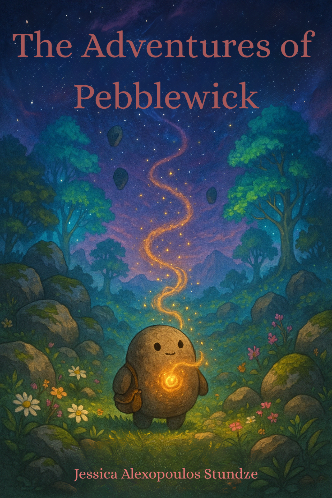

About the Author
The Adventures of Pebblewick
Not all stones stay planted. Pebblewick was placed in a quiet garden to rest, to be still—just as he was shaped to do. But deep inside, something hummed. A call to roll, to move, to find something beyond the fence and flowers. When he finally sets off, Pebblewick tumbles into a world both beautiful and broken. Shadows twist through ancient forests, long-lost magic stirs beneath the ground, and the once-harmonious hum of the land has fallen silent. Alongside Thistle, a fiery-winged forest sprite, and Nib, a scrappy squirrel with a sharp tongue and a good heart, Pebblewick must follow a trail of forgotten light toward the Heart of the World. Guided by whispers of the past and challenged by illusions, darkness, and doubt, Pebblewick discovers that he is more than a garden stone — he is a seed of something long buried and deeply needed. A tale of bravery and strange wonders, where a curious stone leaves behind everything familiar and tumbles into a world full of secrets, shadows, and unexpected strength.
Order Now on Barnes & Noble View on Goodreads